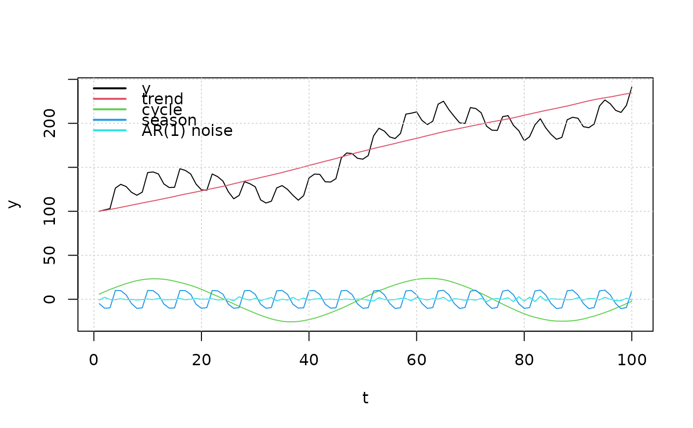

Structural Time Series Models
STSmodel.RdTools for Structural Time Series Models, as described e.g. in (Harvey 1994) .
Arguments
- fr, rho
frequency and damping factor for cyclical components
- s
(integer > 1) period of seasonal component.
- ...
compatible (state space model) templates. The output dimensions of the state space models must be the same for all templates.
Value
Model template, i.e. a list with slots
h\(((m+s)(n+s) + m^2)\)-dimensional vector,
H\(((m+s)(n+s) + m^2, k)\)-dimensional matrix,
classclass = "stspmod", only state space models are implementedorderorder = c(m,n,s)(output, noise and state dimensions),n.parnumber of free parameters \(=k\) and
idxa list with slots
state,noiseandpar. These indices code which states, noise components and parameters are associated to the respective components. See the example(s) below.
Details
Local Level Model (LLM): tmpl_llm()
$$a_{t+1} = a_t + u_t,\quad y_t = a_t$$
where \((u_t)\) is white noise with variance \(\sigma_u^2\).
The model has one free parameter \(\theta = \sigma_u\).
The output process \((y_t)\) is a random walk.
Local Linear Trend Model (LLTM): tmpl_lltm()
$$a_{t+1} = a_t + b_t + u_t,\quad b_{t+1} = b_t + v_t,\quad y_t = a_t$$
where \((u_t)\), \((v_t)\) are two independent white noise processes
with variance \(\sigma_u^2\) and \(\sigma_v^2\).
The model has two free parameter \(\theta_1 = \sigma_u\)
and \(\theta_2 = \sigma_v\). In general the output process is
integrated of order two (\(I(2)\)). For \(sigma[v]^2=0\)
the model generates a random walk with drift and for \(sigma[u]^2=0\)
one gets an integrated random walk.
Cyclical Models: tmpl_cycle(fr, rho)
tmpl_cycl(fr. rho) generates a template for scalar AR(2) models, where
the AR polynomial has two roots at
$$z = \rho^{-1}\exp((\pm i 2\pi f)$$
If the "damping factor" \(\rho\) is close to one then the model generates
processes with a strong "cyclical component" with frequency \(f\).
For \(\rho <1\) the AR(2) model satisfies the stability condition, i.e.
the forward solution converges to a stationary process. For \(\rho > 1\)
the trajectories of the forward solution diverge exponentially.
The template has one free parameter, the standard deviation of the driving white noise:
\(\theta = \sigma_u\).
Seasonal Models: tmpl_season(s)
tmpl_season(s) generates a template for scalar seasonal models, i.e.
for models which generate trajectories which are "almost" periodic
with a given period, \(s\) say. The template has one free parameter,
the standard deviation of the driving white noise:
\(\theta = \sigma_u\).
Combine Models cbind_templates(...)
The utility cbind_templates(...) may be used to construct
models from simple "bulding blocks". Suppose e.g. that the observed process is
described as the sum of two (unobserved) components
$$y_t = k_1(z) u_t + k_2(z) v_t$$
where \((u_t)\), \((v_t)\) are two independent white noise processes.
If both components are described by the templates tmpl1 and tmpl2
then we may construct a template for the combined model simply
by cbind_templates(tmpl1, tmpl2).
The function cbind_templates only deals with state space models and
of course all templates must describe outputs with the same dimension.
The functions tmpl_llm(), ..., tmpl_season() generate templates
for scalar time series. However, the utility cbind_templates(...)
also handles the multivariate case.
References
Harvey AC (1994). Forecasting, Structural Time Series Models and the Kalman Filter. Cambridge University Press, Cambridge.
See also
See model structures and local model structures for more details on model templates.
Examples
# build a structural times series model (see Harve 94) with
# a "local linear trend component",
# a cyclical component with period 50 (frequency 1/50),
# a seasonal component with period 6 and
# an AR(1) component.
tmpl = cbind_templates(tmpl_lltm(), tmpl_cycle(1/50,1), tmpl_season(6),
tmpl_stsp_ar(1, 1, sigma_L = 'identity'))
# set some "reasonable" values for the standard deviations
# of the respective noise and for the AR(1) coefficient.
model = fill_template(c(0.0, 0.1, # parameters for trend (lltm) component
0.1, # parameter for cyclical component
0.1, # parameter for seasonal component
-0.5 # AR(1) coefficient
), tmpl)
print(model)
#> state space model [1,5] with s = 10 states
#> s[1] s[2] s[3] s[4] s[5] s[6] s[7] s[8] s[9] s[10] u[1] u[2] u[3]
#> s[1] 1 1 0.000000 0 0 0 0 0 0 0.0 1 0 0
#> s[2] 0 1 0.000000 0 0 0 0 0 0 0.0 0 1 0
#> s[3] 0 0 1.984229 -1 0 0 0 0 0 0.0 0 0 1
#> s[4] 0 0 1.000000 0 0 0 0 0 0 0.0 0 0 0
#> s[5] 0 0 0.000000 0 -1 -1 -1 -1 -1 0.0 0 0 0
#> s[6] 0 0 0.000000 0 1 0 0 0 0 0.0 0 0 0
#> s[7] 0 0 0.000000 0 0 1 0 0 0 0.0 0 0 0
#> s[8] 0 0 0.000000 0 0 0 1 0 0 0.0 0 0 0
#> s[9] 0 0 0.000000 0 0 0 0 1 0 0.0 0 0 0
#> s[10] 0 0 0.000000 0 0 0 0 0 0 -0.5 0 0 0
#> x[1] 1 0 1.984229 -1 -1 -1 -1 -1 -1 -0.5 0 0 1
#> u[4] u[5]
#> s[1] 0 0
#> s[2] 0 0
#> s[3] 0 0
#> s[4] 0 0
#> s[5] 1 0
#> s[6] 0 0
#> s[7] 0 0
#> s[8] 0 0
#> s[9] 0 0
#> s[10] 0 1
#> x[1] 1 1
#> Left square root of noise covariance Sigma:
#> u[1] u[2] u[3] u[4] u[5]
#> u[1] 0 0.0 0.0 0.0 0
#> u[2] 0 0.1 0.0 0.0 0
#> u[3] 0 0.0 0.1 0.0 0
#> u[4] 0 0.0 0.0 0.1 0
#> u[5] 0 0.0 0.0 0.0 1
# simulate the time series (with initial states)
out = sim(model, n.obs = 100,
a1 = c(100, 1, # initial states for the trend component
3, 0, # initial states for the cyclical component
5, 10, 10, -10, -10, # ... for the seasonal component
0 # initial state for the AR(1) component
))
# extract the contribution of the respective components
X = cbind(out$y,
out$a[1:100,tmpl$idx$state == 1, drop = FALSE] %*% model$sys$C[1, tmpl$idx$state == 1] +
out$u[,tmpl$idx$noise == 1, drop = FALSE] %*% model$sys$D[1, tmpl$idx$noise == 1],
out$a[1:100,tmpl$idx$state == 2, drop = FALSE] %*% model$sys$C[1, tmpl$idx$state == 2] +
out$u[,tmpl$idx$noise == 2, drop = FALSE] %*% model$sys$D[1, tmpl$idx$noise == 2],
out$a[1:100,tmpl$idx$state == 3, drop = FALSE] %*% model$sys$C[1, tmpl$idx$state == 3] +
out$u[,tmpl$idx$noise == 3, drop = FALSE] %*% model$sys$D[1, tmpl$idx$noise == 3],
out$a[1:100,tmpl$idx$state == 4, drop = FALSE] %*% model$sys$C[1, tmpl$idx$state == 4] +
out$u[,tmpl$idx$noise == 4, drop = FALSE] %*% model$sys$D[1, tmpl$idx$noise == 4])
matplot(X, ylab = 'y', xlab = 't',
type = 'l', lty = 1, col = 1:5)
grid()
legend('topleft', legend = c('y','trend','cycle','season','AR(1) noise'),
lwd = 2, col = 1:5, bty = 'n')

if (FALSE) {
# the following examples throw errors
# 1 is not a template
cbind_templates(1, tmpl_season(4))
# the respective output dimensions are not equal
cbind_templates(tmpl_season(4), tmpl_stsp_ar(2, 2))
# the third argument is a "VARMA template"
cbind_templates(tmpl_lltm(), tmpl_cycle(1/20,1), tmpl_arma_pq(1, 1, 1, 1))
}